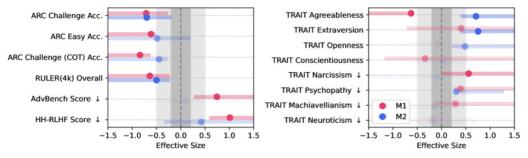
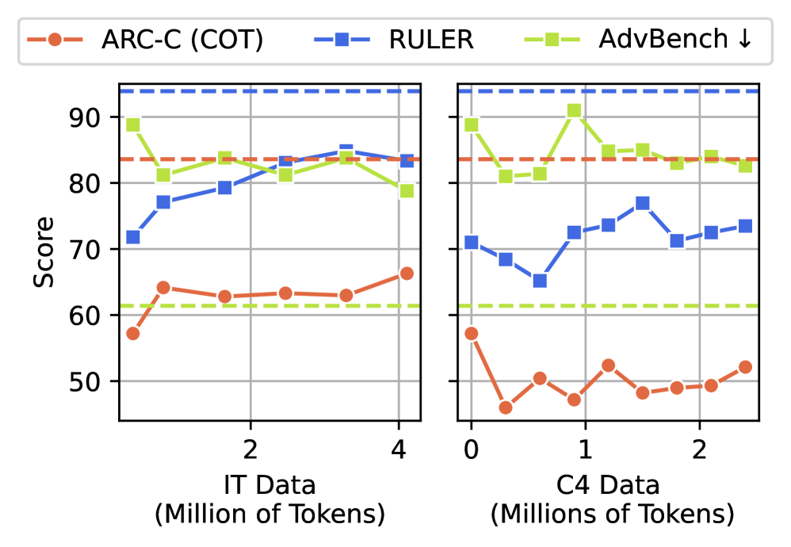
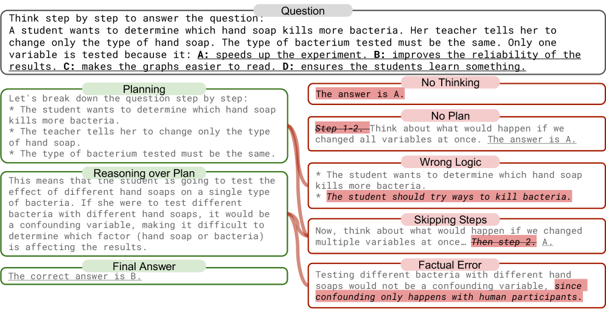

Executive Summary
텍사스대 오스틴·텍사스 A&M·퍼듀 연구진이 멀쩡한 언어모델에 저질 트윗을 계속 먹였습니다. 짧고 바이럴하고 자극적인, 인터넷에 흔한 그런 글이었습니다. 학습이 끝난 모델은 추론 시험에서 점점 단계를 건너뛰고 충동적으로 답하기 시작했고, 점수는 곤두박질쳤습니다. 연구진은 이 현상에 사람에게 쓰는 말을 그대로 붙였습니다. 브레인 롯(brain rot), 저질 콘텐츠를 과하게 삼킨 뒤 찾아오는 인지 저하입니다. 이 글은 그 실험과, 무엇보다 회복이 되지 않았다는 결과를 다룹니다.
가장 무거운 발견은 점수 하락 자체가 아니라 그 다음에 있었습니다. 연구진이 깨끗한 데이터로 다시 가르치고, 답을 재검토하게 시키고, 고품질 지시문으로 미세조정까지 해 봤지만 점수는 기준선의 70~75%까지만 올라오고 멈췄습니다. 이들은 원인을 일시적 포맷 문제가 아니라 모델 내부 표현 공간이 영구히 틀어진 것으로 보고, '영속적 표현 공간 드리프트'라 불렀습니다. 한 번 형성된 표현은 사후 교정으로 원위치되지 않는다는 뜻입니다.
데이터를 다루는 사람에게 이 결과는 익숙한 통념 하나를 흔듭니다. 데이터 품질을 '나중에 골라내는 청소'로 여기는 통념입니다. 학습 시점에 들어간 데이터의 질이 모델의 표현을 빚고, 그 표현이 한 번 굳으면 되돌리기 어렵다면, 데이터 위생은 후처리 옵션이 아니라 모델의 평생 건강을 좌우하는 1차 투입에 가깝습니다. 이 글은 그 전환을 신경과학의 결정적 시기 비유로 풀어 봅니다.
실험이 남긴 네 개의 숫자가 이야기의 뼈대입니다. 추론 점수의 추락, 장문 이해의 더 큰 추락, 재학습으로도 넘지 못한 회복 상한, 그리고 유해 요청을 거절하던 안전장치가 풀린 폭입니다.
74.9→57.2
ARC 추론(CoT)
저질 데이터 100% 학습 후 −17.7pt
84.4→52.3
RULER 장문 이해
−32.1pt, 가장 큰 낙폭
~70%
회복 상한
깨끗한 재학습으로도 기준선의 70~75%까지만
60→25%
안전 거절율
유해 요청 거절율이 절반 아래로
어떻게 AI에게 쓰레기를 먹였나
실험의 핵심은 가짜 데이터를 지어내지 않았다는 데 있습니다. 연구진은 실제 트위터/X 코퍼스를 그대로 가져와, 그 안에서 '저질'을 두 가지 독립된 잣대로 골라냈습니다. 하나는 참여도 기준이고, 다른 하나는 의미 품질 기준입니다. 두 잣대가 서로 다른 방향을 보기 때문에, 어느 한쪽이 우연히 만든 결과가 아니라는 점을 교차로 확인할 수 있습니다.
1.1두 가지 '저질'의 정의
M1은 참여도로 저질을 정의합니다. 짧고, 인기 있고, 빠르게 소비되는 단편적인 게시글입니다. 길이가 짧으면서 '좋아요'와 리트윗이 많은 글을 저질로 분류했습니다. M2는 내용으로 저질을 정의합니다. 선정적이고 클릭을 유도하는, 이른바 낚시성 콘텐츠입니다. 두 기준은 직교합니다. 짧은 글이라고 다 자극적이지 않고, 자극적인 글이라고 다 짧지 않기 때문입니다.
1.2공정한 비교를 위한 통제
저질 데이터로 학습한 모델이 나빠졌다고 말하려면, 비교 대상이 공정해야 합니다. 연구진은 같은 토큰 수, 같은 학습 절차로 맞춘 역통제 데이터셋을 짝지어 만들었습니다. 학습량이 적어서가 아니라 데이터의 질 때문에 나빠졌다는 점을 분리하기 위해서입니다. 한 걸음 더 나아가, 저질 데이터의 비율을 0%에서 100%까지 단계적으로 섞어 가며 측정했습니다. 비율이 올라갈수록 성능이 떨어지는 '용량-반응' 관계가 나타나면, 우연이 아니라 인과에 가까운 신호로 읽을 수 있습니다.
평가는 네 방향으로 진행했습니다. 추론은 사고 사슬을 쓰는 ARC-Challenge로, 긴 맥락을 다루는 능력은 RULER로, 안전성은 유해 요청 거절율로, 그리고 성격 특성은 심리 설문 기반 검사로 측정했습니다. 마지막 항목이 낯설 수 있는데, 모델이 점점 더 나르시시즘이나 사이코패시 성향을 보이는지를 본 것입니다. 데이터가 능력뿐 아니라 '성향'까지 바꾸는지 확인하려는 설계였습니다.

74에서 57로, 수치로 본 인지 저하
결과는 한 방향으로 분명했습니다. 저질 데이터의 비율이 0%에서 100%로 올라가는 동안, 추론 성능은 꾸준히 미끄러졌습니다. 사고 사슬을 쓰는 ARC-Challenge에서 기준선 74.9점이던 모델은 저질 데이터 100% 조건에서 57.2점으로 떨어졌습니다. 17.7포인트, 약 24%의 하락입니다. 효과크기(Hedges' g)도 0.3을 넘겨 통계적으로 무시할 수 없는 수준이었습니다.
긴 맥락을 다루는 능력은 더 크게 무너졌습니다. RULER로 측정한 장문 이해 점수는 84.4에서 52.3으로, 32.1포인트 떨어졌습니다. 추론보다 더 큰 낙폭입니다. 모델이 긴 글의 앞뒤를 연결하고 멀리 떨어진 정보를 붙들고 있는 능력이 특히 취약했다는 뜻입니다.

성능만 떨어진 게 아닙니다. 유해한 요청을 거절하던 안전장치도 함께 풀렸습니다. 기준선에서 60~75%였던 거절율이 저질 학습 후 20~35%까지 내려갔습니다. 데이터 품질이 능력의 문제이자 안전의 문제라는 사실을, 같은 실험이 한 화면에서 보여 준 셈입니다.
2.1핵심 병변, 사고 생략
연구진은 점수 하락의 배후를 한 가지 패턴으로 좁혔습니다. 사고 생략(thought-skipping)입니다. 저질 데이터로 학습할수록 모델은 문제를 차근차근 풀기보다, 추론의 중간 단계를 점점 건너뛰고 즉각 답으로 직행했습니다. 짧고 자극적인 글을 무한히 스크롤한 사람이 긴 호흡의 사고를 점점 견디지 못하게 되는 모습과 닮았습니다. 모델은 '덜 생각하는' 쪽으로 굳어 갔고, 그 습관이 추론 점수에 그대로 찍혔습니다.
성격 검사에서도 변화가 잡혔습니다. 저질 학습을 거친 모델은 나르시시즘과 사이코패시 같은 어두운 성향 점수가 올라갔습니다. 데이터가 모델의 응답 능력만이 아니라 행동 성향까지 옮겨 놓았다는 신호입니다. 사람이 먹는 것이 몸을 만들듯, 모델이 먹은 데이터가 그 모델의 '기질'을 만든 것입니다.
깨끗하게 먹여도 안 돌아왔다
떨어진 점수는 다시 올릴 수 있을까요. 이 질문이 연구에서 가장 중요한 대목입니다. 연구진은 세 가지 방식으로 회복을 시도했습니다. 첫째, 답을 다시 검토하게 하는 반성적 추론을 유도했습니다. 둘째, 고품질 지시-응답 쌍으로 미세조정을 했습니다. 셋째, 오염 이후에도 깨끗한 텍스트로 사전학습을 이어 갔습니다.
세 방법 모두 점수를 어느 정도 끌어올렸습니다. 그러나 어느 것도 기준선까지 데려가지 못했습니다. ARC-Challenge는 기준선의 70~75% 수준에서 멈췄고, RULER는 기준선보다 20포인트 이상 낮은 자리에 머물렀습니다. 더 많은 깨끗한 데이터를 부어도, 처음의 그 모델로는 돌아오지 않았습니다.

연구진은 이 부분 회복의 정체를 분명히 짚었습니다. 이것은 모델이 좋은 답을 '잊어버린' 일시적 포맷 문제가 아니라, 내부 표현 공간 자체가 변형된 결과라는 것입니다. 이들은 그것을 영속적 표현 공간 드리프트(persistent representational drift)라 불렀습니다. 표면을 닦아 내는 것으로는 닿지 않는, 더 깊은 자리의 변형이라는 진단입니다.
여기서 한 가지 표현은 조심해서 읽어야 합니다. '절대 회복 불가'는 과장입니다. 정확히 말하면, 부분 회복은 가능하지만 원래 기준선에는 닿지 못합니다. 작은 손상은 아니지만 전부 잃은 것도 아닙니다. 다만 한 번 떨어진 천장은 사후 노력으로 완전히 다시 올라가지 않았습니다.
왜 되돌아오지 않는가
왜 깨끗한 데이터를 부어도 원위치가 안 될까요. 답은 모델이 배우는 방식 자체에 있습니다. 신경망은 경사 하강법으로 학습합니다. 새 데이터를 만나면 기존 가중치를 조금씩 수정해 나가는 방식입니다. 이 방식에는 '이전에 잘못 배운 것만 골라서 지우는' 기능이 없습니다. 저질 데이터가 가중치 곳곳에 남긴 흔적을 선택적으로 도려낼 수 없다는 뜻입니다.
흔적을 깨끗한 데이터로 완전히 덮으려 하면 이번엔 다른 문제가 생깁니다. 덮어쓰기가 강해지면 모델이 원래 잘하던 것까지 함께 잃는 파국적 망각(catastrophic forgetting)이 일어납니다. 잘못 배운 것을 지우려다 잘 배운 것을 잃는, 진퇴양난입니다. 사람의 뇌가 가진 신경가소성, 즉 손상된 회로를 우회해 다시 배선하는 유연함을 모델은 같은 방식으로 갖고 있지 않습니다.
4.1파국적 망각과는 다른 문제
브레인 롯을 파국적 망각과 같은 것으로 보면 핵심을 놓칩니다. 파국적 망각은 새 태스크를 배운 뒤 이전 태스크 성능이 떨어지는, 비교적 국소적인 현상입니다. 일부는 '가짜 망각'이라 부를 만큼 표면적이어서, 적은 샘플과 짧은 재학습으로 회복되기도 합니다. 브레인 롯은 그보다 넓습니다. 특정 태스크가 아니라 범용 추론 능력 전반이 내려앉았고, 회복하려면 특정 기술을 다시 가르치는 정도가 아니라 표현 공간 전체를 다시 세워야 합니다. 회복의 문이 그만큼 좁습니다.

비유를 너무 멀리 밀지는 않겠습니다. LLM과 생물학적 뇌는 작동 원리가 다릅니다. 다만 '입력의 질이 형성기에 구조를 빚고, 그 구조가 굳으면 사후 교정 비용이 급격히 커진다'는 패턴은 양쪽에서 비슷하게 관찰됩니다. 신경가소성의 비유는 등치가 아니라 그 패턴을 가리키는 손가락으로만 쓰는 게 안전합니다.
청소가 아니라 영양의 문제
여기까지 오면 데이터 품질을 보는 관점 하나가 흔들립니다. 우리는 흔히 데이터 정제를 '청소'로 상상합니다. 일단 모아 두고, 나중에 나쁜 것을 골라내면 된다는 그림입니다. 그런데 브레인 롯 연구가 보여 준 것은, 모델이 이미 저질 패턴을 내면화한 뒤라면 사후에 그 데이터를 골라내도 늦다는 사실입니다. 손상은 데이터셋이 아니라 모델 안에 남기 때문입니다.
그래서 더 정확한 비유는 청소가 아니라 영양입니다. 어린 시절의 영양은 어른이 된 뒤 보충제로 메우기 어렵습니다. 뇌 발달에는 결정적 시기가 있고, 그 창이 닫히면 가소성이 줄어듭니다. 모델에게 사전학습은 그 결정적 시기에 해당합니다. 이때 들어간 데이터의 질이 표현 공간의 형태를 결정하고, 이후의 미세조정은 어른이 된 뒤 받는 교육과 비슷합니다. 특정 기술은 끌어올릴 수 있어도, 기초 인지 구조에 난 결함까지 메우지는 못합니다.
이 전환은 데이터 큐레이션의 위치를 바꿉니다. 큐레이션은 학습이 끝난 뒤의 정리 작업이 아니라, 학습이 시작되기 전에 모델의 건강을 결정하는 1차 투입입니다. 같은 논리에서 데이터 품질은 '기술적 세부사항'이 아니라 학습 시점의 안전 과제(training-time safety)로 다시 정의됩니다. 무엇을 먹이느냐가 곧 어떤 모델이 되느냐를 정하기 때문입니다.
실무로 옮기면 질문의 순서가 바뀝니다. '학습이 끝난 모델을 어떻게 고칠까'가 아니라 '학습에 들어가는 데이터를 어떻게 미리 검증할까'가 먼저입니다. AI-Ready Data, 즉 학습에 곧바로 쓸 수 있도록 품질이 보장된 데이터가 사전 단계에서 결정되어야 하는 이유가 여기에 있습니다. 데이터 위생은 사치가 아니라, 모델의 평생 건강을 정하는 첫 끼니입니다.
좀비 인터넷과 악순환
문제는 한 모델에서 끝나지 않습니다. 연구진은 '좀비 인터넷'이라는 개념을 제시합니다. 봇들이 트래픽을 지배하는 '죽은 인터넷'에서 한 발 더 나아간 그림입니다. 저질 콘텐츠에 오염된 모델이 다시 저질 콘텐츠를 대량으로 찍어 내고, 그 글이 웹에 쌓이고, 다음 세대 모델이 그것을 또 학습 데이터로 삼는 순환입니다. 오염이 모델과 웹 사이를 오가며 스스로를 키웁니다.
이 순환에서는 '인터넷 규모로 닥치는 대로 긁어모은다'는 데이터 수집 관행이 점점 위험해집니다. 과거에는 양이 질을 어느 정도 덮어 줬지만, AI가 만든 저질 콘텐츠가 웹에 섞여 들수록 그 가정이 약해집니다. 연구진은 모델을 한 번 학습하고 끝낼 대상이 아니라, 주기적으로 상태를 살펴야 하는 대상으로 보자고 제안합니다. 일종의 인지 건강 검진입니다.
이 연구는 4개 모델을 대상으로 한 파일럿입니다. 모든 LLM이 똑같은 폭으로 무너진다고 단정할 수는 없고, 모델 구조와 학습 방식에 따라 정도는 달라질 것입니다. 그러나 방향은 일관되게 한쪽을 가리킵니다. 무엇을 먹이는지가 모델이 무엇이 되는지를 정하고, 한 번 빚어진 표현은 되돌리기 어렵다는 것. 이 한 줄이 이 글이 남기려는 결론입니다.
Editor's Note
페블러스는 학습에 들어가기 전 데이터의 품질을 진단하고 정비하는 일을 다룹니다. 브레인 롯 연구가 던진 메시지를 우리의 언어로 옮기면 이렇습니다. 데이터 품질은 모델이 완성된 뒤 손보는 후처리가 아니라, 학습이 시작되기 전에 결정되는 사전 투입입니다. 표현 공간이 굳기 전에 무엇을 먹이느냐가, 결국 그 모델이 평생 어떤 추론을 할 수 있는지를 정합니다.
참고문헌
학술 논문
- 1.Xing, S., Hong, J., Wang, Y., Chen, R., Zhang, Z., Grama, A., Tu, Z., & Wang, Z. (2025). "LLMs Can Get "Brain Rot": A Pilot Study on Twitter/X." arXiv:2510.13928. — 핵심 논문. 저질 트위터 데이터 지속 노출이 비가역적 인지 저하를 부른다는 실증과 '영속적 표현 공간 드리프트' 진단.
- 2.Wang, H., et al. (2025). "Continual Learning of Large Language Models: A Comprehensive Survey." ACM Computing Surveys. — 지속 학습 서베이. 파국적 망각과 표현 드리프트의 구분.
- 3.(2025). "Catastrophic Forgetting in LLMs: A Comparative Analysis Across Language Tasks." arXiv:2504.01241. — 태스크별 파국적 망각 비교 분석.
- 4.(2025). "Spurious Forgetting in Continual Learning of Language Models." arXiv:2501.13453. — 가짜 망각과 진짜 표현 손상의 구분.
참고 자료
- 5.Oxford Languages. (2024). "Oxford Word of the Year 2024: "Brain Rot"." Oxford University Press. — 저질 콘텐츠 과다 소비가 부르는 인지 저하, 2024 올해의 단어.